מאפיינים
שם: אנטריקוט
שמות נוספים: ורד הצלע, "פריים ריב", סטייק עין"
מיקום: חלקה הקדמי של הפרה
רמת שומניות: גבוהה
מספר נתח: נתח מספר 1
המלצות הקצב
- הנתח הוא בעל טעם עשיר ואין צורך להוסיף לו רטבים או מרינדה- מלח ופלפל יעשו את העבודה
- נתח האנטריקוט מתאים גם לצלייה איטית כנתח שלם על גריל
- על מנת לשמור על טעמו העשיר מידת העשייה המומלצת היא מדיום- רייר
אופן עשייה מומלץ
- בישול
- צלייה


עתיר בסיבי שומן
'עין' מרכזית שומנית בנתח
צבע הנתח הוא אדום מאיר
גלריה
-min.jpg)
×